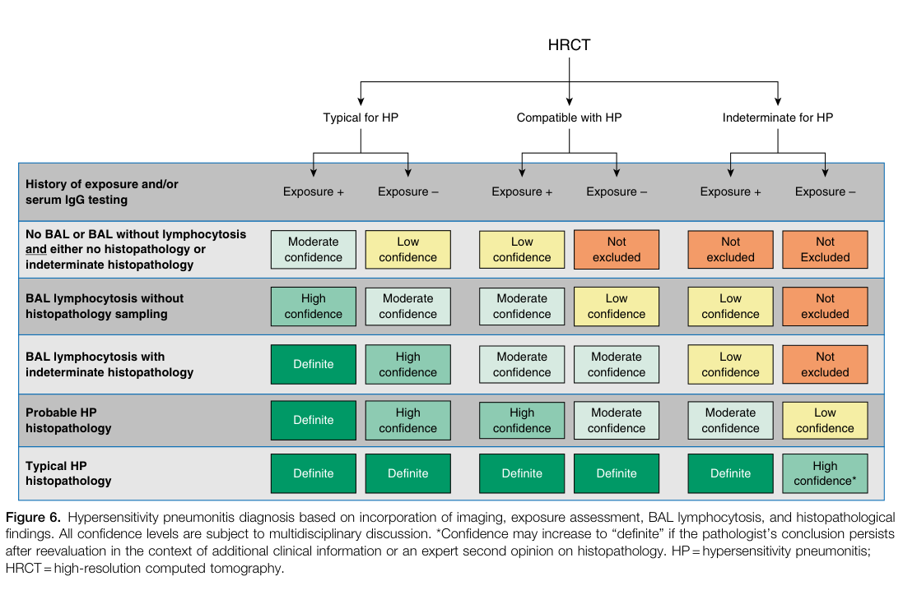

Hypersensitivity pneumonitis is an immune-mediated interstitial lung disease caused by repeated inhalation of environmental antigens in susceptible and sensitized individuals, with inflammation centered on small airways and lung parenchyma and potential progression to chronic fibrotic lung disease.
Ask a research question about Hypersensitivity pneumonitis. OpenScientist will conduct autonomous deep research using the Disorder Mechanisms Knowledge Base and PubMed literature (typically 10-30 minutes).
Do not include personal health information in your question. Questions and results are cached in your browser's local storage.
Conditions with similar clinical presentations that must be differentiated from Hypersensitivity pneumonitis:
name: Hypersensitivity pneumonitis
creation_date: "2026-05-26T00:00:00Z"
category: Respiratory Disease
description: >-
Hypersensitivity pneumonitis is an immune-mediated interstitial lung disease
caused by repeated inhalation of environmental antigens in susceptible and
sensitized individuals, with inflammation centered on small airways and lung
parenchyma and potential progression to chronic fibrotic lung disease.
disease_term:
preferred_term: hypersensitivity pneumonitis
term:
id: MONDO:0017853
label: hypersensitivity pneumonitis
parents:
- Allergic Respiratory Disease
- Interstitial Lung Disease
- Pneumonitis
synonyms:
- Extrinsic allergic alveolitis
- HP
references:
- reference: PMID:29763093
title: Hypersensitivity Pneumonitis.
epidemiology:
- name: Nationwide incidence in South Korea
description: >-
Nationwide claims analysis found annual age- and sex-adjusted incidence in
Korea ranging from 1.14 to 2.16 per 100,000 between 2012 and 2020.
evidence:
- reference: PMID:38501183
reference_title: Nationwide Study of the Epidemiology, Diagnosis, and Treatment of Hypersensitivity Pneumonitis in Korea.
supports: SUPPORT
evidence_source: HUMAN_CLINICAL
snippet: >-
A total of 8,678 HP incident cases were confirmed, with age- and
sex-adjusted annual incidence rates ranging from 1.14/100,000 in 2020 to
2.16/100,000 in 2012.
explanation: This nationwide cohort provides quantitative incidence bounds for HP.
- name: Fibrotic subtype predominance in prospective cohort
description: >-
In a large prospective cohort, fibrotic HP represented a larger proportion
of enrolled cases than non-fibrotic HP.
evidence:
- reference: DOI:10.1097/CM9.0000000000002613
reference_title: "Clinical characteristics of hypersensitivity pneumonitis: non-fibrotic and fibrotic subtypes"
supports: SUPPORT
evidence_source: HUMAN_CLINICAL
snippet: >-
A total of 202 patients with HP were enrolled, including 87 (43.1%) NFHP
patients and 115 (56.9%) FHP patients.
explanation: This prospective cohort quantifies relative frequencies of fibrotic versus non-fibrotic HP.
has_subtypes:
- name: Acute inflammatory hypersensitivity pneumonitis
description: >-
High-level intermittent antigen exposure causes abrupt inflammatory episodes
that typically begin hours after exposure.
evidence:
- reference: PMID:32764620
reference_title: Hypersensitivity pneumonitis.
supports: SUPPORT
evidence_source: OTHER
snippet: >-
Acute HP results from intermittent, high-level exposure to the inducing
antigen, usually within a few hours of exposure
explanation: The review defines acute disease as high-level intermittent exposure with rapid onset.
- name: Chronic non-fibrotic hypersensitivity pneumonitis
description: >-
Persistent lower-level exposure drives chronic inflammation without
established fibrotic architectural distortion.
evidence:
- reference: PMID:32764620
reference_title: Hypersensitivity pneumonitis.
supports: SUPPORT
evidence_source: OTHER
snippet: >-
HP can be classified into acute, chronic non-fibrotic and chronic
fibrotic forms.
explanation: The review explicitly recognizes chronic non-fibrotic HP as a major subtype.
- name: Chronic fibrotic hypersensitivity pneumonitis
description: >-
Progressive disease with fibrotic remodeling, traction bronchiectasis, and
increased mortality risk.
evidence:
- reference: PMID:32764620
reference_title: Hypersensitivity pneumonitis.
supports: SUPPORT
evidence_source: OTHER
snippet: >-
HP can be classified into acute, chronic non-fibrotic and chronic
fibrotic forms.
explanation: The review explicitly identifies chronic fibrotic HP as a distinct subtype.
pathophysiology:
- name: Repetitive inhaled antigen exposure and sensitization
description: >-
Inhalation of environmental antigens such as bird proteins and fungal
material in susceptible individuals initiates immune sensitization and
disease onset.
role: trigger
locations:
- preferred_term: lung
term:
id: UBERON:0002048
label: lung
evidence:
- reference: PMID:32764620
reference_title: Hypersensitivity pneumonitis.
supports: SUPPORT
evidence_source: OTHER
snippet: >-
Hypersensitivity pneumonitis (HP) is a complex syndrome caused by the
inhalation of a variety of antigens in susceptible and sensitized
individuals.
explanation: This sentence defines the initiating exposure-sensitization step in HP pathogenesis.
downstream:
- target: Exaggerated humoral and cellular lung immune response
- name: Exaggerated humoral and cellular lung immune response
description: >-
Sensitized lungs mount exaggerated humoral and cellular immune activation
involving small airways and parenchyma.
role: central
cell_types:
- preferred_term: T cell
term:
id: CL:0000084
label: T cell
- preferred_term: alveolar macrophage
term:
id: CL:0000583
label: alveolar macrophage
biological_processes:
- preferred_term: immune response
term:
id: GO:0006955
label: immune response
modifier: INCREASED
- preferred_term: inflammatory response
term:
id: GO:0006954
label: inflammatory response
modifier: INCREASED
evidence:
- reference: PMID:32764620
reference_title: Hypersensitivity pneumonitis.
supports: SUPPORT
evidence_source: OTHER
snippet: >-
Immunopathologically, HP is characterized by an exaggerated humoral and
cellular immune response affecting the small airways and lung parenchyma.
explanation: The review directly supports the central immune-amplification mechanism in HP.
downstream:
- target: Bronchiolocentric granulomatous inflammation
- name: Bronchiolocentric granulomatous inflammation
description: >-
Immune-driven inflammation around bronchioles produces lymphocytic
infiltrates and poorly formed non-caseating granulomas.
role: effector
cell_types:
- preferred_term: T cell
term:
id: CL:0000084
label: T cell
- preferred_term: alveolar macrophage
term:
id: CL:0000583
label: alveolar macrophage
evidence:
- reference: PMID:30448501
reference_title: "Hypersensitivity pneumonitis: A fibrosing alveolitis produced by inhalation of diverse antigens."
supports: SUPPORT
evidence_source: OTHER
snippet: >-
The histology of HP reveals prominent lymphocyte infiltrates that thicken
the alveolar septa with poorly formed granulomas or giant cells.
explanation: Histologic description supports airway-centered granulomatous inflammatory injury.
downstream:
- target: Fibrotic remodeling of interstitial lung architecture
- name: Fibrotic remodeling of interstitial lung architecture
description: >-
Ongoing inflammation can transition to fibrotic remodeling with reticulation,
traction bronchiectatic change, and honeycombing.
role: late_effector
cell_types:
- preferred_term: fibroblast
term:
id: CL:0000057
label: fibroblast
- preferred_term: myofibroblast
term:
id: CL:0000186
label: myofibroblast cell
biological_processes:
- preferred_term: extracellular matrix organization
term:
id: GO:0030198
label: extracellular matrix organization
modifier: INCREASED
evidence:
- reference: PMID:30448501
reference_title: "Hypersensitivity pneumonitis: A fibrosing alveolitis produced by inhalation of diverse antigens."
supports: SUPPORT
evidence_source: OTHER
snippet: >-
Abnormalities on high-resolution computed tomographic examinations range
from nodular centrilobular opacities in acute/subacute disease to
increased reticular markings and honeycombing fibrosis, which typically
are predominant in the upper lobes, in patients with advanced disease.
explanation: The review links advanced HP to imaging evidence of fibrosis and architectural distortion.
downstream:
- target: Progressive respiratory functional decline
- name: Progressive respiratory functional decline
description: >-
Advanced fibrotic HP can follow a progressive phenotype with restrictive
impairment and poor medium-term outcomes despite exposure cessation.
role: consequence
evidence:
- reference: PMID:32764620
reference_title: Hypersensitivity pneumonitis.
supports: SUPPORT
evidence_source: OTHER
snippet: >-
Some patients with fibrotic HP may evolve to a progressive phenotype,
even with complete exposure avoidance.
explanation: This directly supports progression despite elimination of the identified antigen.
- reference: PMID:30515826
reference_title: Long-term outcomes in chronic hypersensitivity pneumonitis.
supports: SUPPORT
evidence_source: HUMAN_CLINICAL
snippet: >-
CONCLUSION: CHP is a severe disease with a bad mid-term prognosis.
explanation: Longitudinal human data support poor outcomes in chronic disease.
phenotypes:
- category: Respiratory
name: Dyspnea
description: Shortness of breath is a core symptom across acute and chronic HP.
phenotype_term:
preferred_term: Dyspnea
term:
id: HP:0002094
label: Dyspnea
evidence:
- reference: PMID:30448501
reference_title: "Hypersensitivity pneumonitis: A fibrosing alveolitis produced by inhalation of diverse antigens."
supports: SUPPORT
evidence_source: OTHER
snippet: >-
Mimicking a viral syndrome, acute exposures to inciting antigens cause
abrupt onset of nonproductive cough, dyspnea, and chills with arthralgias
or malaise usually from 4 to 8 hours later
explanation: The review directly lists dyspnea as a canonical presenting symptom.
- category: Respiratory
name: Cough
description: Nonproductive cough is common and can be temporally linked to antigen exposure.
phenotype_term:
preferred_term: Cough
term:
id: HP:0012735
label: Cough
evidence:
- reference: PMID:30448501
reference_title: "Hypersensitivity pneumonitis: A fibrosing alveolitis produced by inhalation of diverse antigens."
supports: SUPPORT
evidence_source: OTHER
snippet: >-
Mimicking a viral syndrome, acute exposures to inciting antigens cause
abrupt onset of nonproductive cough, dyspnea, and chills with arthralgias
or malaise usually from 4 to 8 hours later
explanation: The review identifies nonproductive cough as a typical acute symptom.
- category: Respiratory
name: Ground-glass opacification
description: Ground-glass opacities are common HRCT descriptors in HP.
phenotype_term:
preferred_term: Ground-glass opacification
term:
id: HP:0025179
label: Ground-glass opacification
evidence:
- reference: PMID:30448501
reference_title: "Hypersensitivity pneumonitis: A fibrosing alveolitis produced by inhalation of diverse antigens."
supports: SUPPORT
evidence_source: OTHER
snippet: >-
Descriptors include "mosaic" attenuation and ground-glass opacities.
explanation: The review identifies ground-glass opacities as a characteristic imaging descriptor in HP.
- category: Respiratory
name: Crackles
description: Inspiratory crackles are more frequent in fibrotic HP than in non-fibrotic HP.
phenotype_term:
preferred_term: Crackles
term:
id: HP:0030830
label: Crackles
evidence:
- reference: DOI:10.1097/CM9.0000000000002613
reference_title: "Clinical characteristics of hypersensitivity pneumonitis: non-fibrotic and fibrotic subtypes"
supports: SUPPORT
evidence_source: HUMAN_CLINICAL
snippet: >-
Patients with FHP were older and more frequently presented with
dyspnea, crackles, and digital clubbing than patients with NFHP.
explanation: The prospective cohort demonstrates crackles as an enriched clinical finding in fibrotic HP.
- category: Respiratory
name: Clubbing
description: Digital clubbing is enriched in fibrotic HP compared with non-fibrotic disease.
phenotype_term:
preferred_term: Clubbing
term:
id: HP:0001217
label: Clubbing
evidence:
- reference: DOI:10.1097/CM9.0000000000002613
reference_title: "Clinical characteristics of hypersensitivity pneumonitis: non-fibrotic and fibrotic subtypes"
supports: SUPPORT
evidence_source: HUMAN_CLINICAL
snippet: >-
Patients with FHP were older and more frequently presented with
dyspnea, crackles, and digital clubbing than patients with NFHP.
explanation: The prospective cohort demonstrates digital clubbing as an enriched finding in fibrotic HP.
histopathology:
- name: Airway-centered poorly formed granulomatous inflammation
diagnostic: true
description: >-
Histology classically shows bronchiolocentric lymphocytic inflammation with
poorly formed non-caseating granulomatous lesions.
finding_term:
preferred_term: bronchiolocentric poorly formed non-caseating granulomas
evidence:
- reference: PMID:30448501
reference_title: "Hypersensitivity pneumonitis: A fibrosing alveolitis produced by inhalation of diverse antigens."
supports: SUPPORT
evidence_source: OTHER
snippet: >-
The histology of HP reveals prominent lymphocyte infiltrates that thicken
the alveolar septa with poorly formed granulomas or giant cells.
explanation: This review provides validated histologic hallmarks for HP diagnosis.
- name: Fibrotic remodeling in chronic disease
diagnostic: true
description: >-
Chronic untreated disease shows fibrosis around small airways and can mimic
UIP/NSIP patterns at advanced stages.
finding_term:
preferred_term: bronchiolocentric fibrosis with chronic inflammation
evidence:
- reference: PMID:30448501
reference_title: "Hypersensitivity pneumonitis: A fibrosing alveolitis produced by inhalation of diverse antigens."
supports: SUPPORT
evidence_source: OTHER
snippet: >-
Abnormalities on high-resolution computed tomographic examinations range
from nodular centrilobular opacities in acute/subacute disease to
increased reticular markings and honeycombing fibrosis, which typically
are predominant in the upper lobes, in patients with advanced disease.
explanation: The review supports progression to fibrotic structural lung disease in advanced HP.
differential_diagnoses:
- name: Idiopathic pulmonary fibrosis
description: >-
Chronic fibrotic HP can mimic idiopathic pulmonary fibrosis/usual
interstitial pneumonia, but HRCT pattern distribution helps distinguish
these entities.
distinguishing_features:
- Honeycombing with lower lung zone predominance favors IPF/UIP over chronic HP.
- Absence of centrilobular small nodules favors IPF/UIP over chronic HP.
disease_term:
preferred_term: idiopathic pulmonary fibrosis
term:
id: MONDO:0800504
label: idiopathic pulmonary fibrosis
evidence:
- reference: PMID:24480143
reference_title: "Chronic hypersensitivity pneumonitis and pulmonary sarcoidosis: differentiation from usual interstitial pneumonia using high-resolution computed tomography."
supports: SUPPORT
evidence_source: HUMAN_CLINICAL
snippet: >-
In idiopathic pulmonary fibrosis or usual interstitial pneumonia,
however, the presence of honeycombing with lower lung zone predominance
and the absence of centrilobular small nodules are important findings
that allow us to differentiate the disease from chronic HP or
advanced-stage sarcoidosis.
explanation: This HRCT-focused study provides direct image-based differentiators between chronic HP and IPF/UIP.
- name: Pulmonary sarcoidosis
description: >-
Advanced pulmonary sarcoidosis can resemble fibrotic HP, but typically
shows upper and middle zone-predominant fibrotic changes with relative
basal sparing.
distinguishing_features:
- Upper and middle lung zone predominance favors advanced sarcoidosis.
- Relative sparing of lung bases supports sarcoidosis over UIP/IPF patterns.
disease_term:
preferred_term: sarcoidosis
term:
id: MONDO:0019338
label: sarcoidosis
evidence:
- reference: PMID:24480143
reference_title: "Chronic hypersensitivity pneumonitis and pulmonary sarcoidosis: differentiation from usual interstitial pneumonia using high-resolution computed tomography."
supports: SUPPORT
evidence_source: HUMAN_CLINICAL
snippet: >-
In advanced-stage sarcoidosis, patchy areas of reticulation, traction
bronchiectasis, architectural distortion, honeycomblike cysts, bullae,
and paracicatricial emphysema are observed in the upper and middle lung
zones. Lung bases are usually spared.
explanation: The abstract outlines the distributional HRCT pattern that helps differentiate advanced pulmonary sarcoidosis from other fibrosing ILDs.
diagnosis:
- name: ATS/JRS/ALAT multidisciplinary diagnostic framework
description: >-
Current diagnosis integrates exposure history, HRCT pattern analysis,
bronchoalveolar lavage lymphocyte profiling, and selective tissue sampling
with multidisciplinary interpretation.
diagnosis_term:
preferred_term: diagnostic procedure
term:
id: MAXO:0000003
label: diagnostic procedure
evidence:
- reference: DOI:10.1164/RCCM.202005-2032ST
reference_title: "Diagnosis of Hypersensitivity Pneumonitis in Adults: An Official ATS/JRS/ALAT Clinical Practice Guideline"
supports: SUPPORT
evidence_source: HUMAN_CLINICAL
snippet: >-
The guideline committee developed a systematic approach to the diagnosis
of HP.
explanation: The official guideline establishes a formal diagnostic framework for adult HP.
images:
- Hypersensitivity_Pneumonitis-deep-research-falcon_artifacts/image-1.png
- name: BAL cellular profile for fibrotic risk stratification
description: >-
Lower BAL lymphocyte proportion and higher BAL eosinophil proportion are
associated with fibrotic subtype and can support risk-focused phenotyping.
diagnosis_term:
preferred_term: diagnostic procedure
term:
id: MAXO:0000003
label: diagnostic procedure
evidence:
- reference: DOI:10.1097/CM9.0000000000002613
reference_title: "Clinical characteristics of hypersensitivity pneumonitis: non-fibrotic and fibrotic subtypes"
supports: SUPPORT
evidence_source: HUMAN_CLINICAL
snippet: >-
Multivariable regression analyses revealed that older age, <20% of
lymphocyte in BAL, and ≥1.75% of eosinophil in BAL were risk factors for
the development of FHP.
explanation: This prospective cohort provides quantitative BAL-associated risk features for fibrotic HP.
- name: Antigen-specific IgG serologic testing
description: >-
Serologic IgG testing against candidate antigens can support exposure
identification within multidisciplinary diagnosis.
diagnosis_term:
preferred_term: diagnostic procedure
term:
id: MAXO:0000003
label: diagnostic procedure
evidence:
- reference: PMID:32764620
reference_title: Hypersensitivity pneumonitis.
supports: SUPPORT
evidence_source: OTHER
snippet: >-
Diagnosis is based on an accurate exposure history, clinical
presentation, characteristic high-resolution CT findings, specific IgG
antibodies to the offending antigen, bronchoalveolar lavage and
pathological features.
explanation: The review explicitly includes antigen-specific IgG antibodies among core diagnostic modalities.
environmental:
- name: Bird protein exposure
notes: Bird droppings, feathers, and related avian proteins are major home and hobby-associated triggers.
exposure_term:
preferred_term: exposure to animal waste material
term:
id: ECTO:7000098
label: exposure to animal waste material
evidence:
- reference: PMID:32764620
reference_title: Hypersensitivity pneumonitis.
supports: SUPPORT
evidence_source: OTHER
snippet: >-
These antigens are found in the environment, mostly derived from bird
proteins and fungi.
explanation: Review supports bird proteins as one of the dominant environmental antigen classes.
- name: Fungal and microbial antigen exposure
notes: Fungal antigens, thermophilic bacteria, and other bioaerosols can trigger sensitization.
exposure_term:
preferred_term: exposure to allergen
term:
id: ECTO:0000726
label: exposure to allergen
evidence:
- reference: PMID:30448501
reference_title: "Hypersensitivity pneumonitis: A fibrosing alveolitis produced by inhalation of diverse antigens."
supports: SUPPORT
evidence_source: OTHER
snippet: >-
Hypersensitivity pneumonitis (HP) is a TH1 lymphocyte-biased fibrosing
alveolitis caused by antigens ranging from avian excreta, fungi,
thermophilic bacteria, and protozoa to reactive chemicals found in the
workplace.
explanation: The review catalogs key microbial and occupational exposure sources.
progression:
- phase: Acute inflammatory phase
notes: Symptoms begin within hours after high-level intermittent antigen exposure.
evidence:
- reference: PMID:32764620
reference_title: Hypersensitivity pneumonitis.
supports: SUPPORT
evidence_source: OTHER
snippet: >-
Acute HP results from intermittent, high-level exposure to the inducing
antigen, usually within a few hours of exposure
explanation: Defines the temporal profile of acute inflammatory disease.
- phase: Chronic fibrotic phase
notes: Persistent disease may progress to fibrosis and worse outcomes.
evidence:
- reference: PMID:30515826
reference_title: Long-term outcomes in chronic hypersensitivity pneumonitis.
supports: SUPPORT
evidence_source: HUMAN_CLINICAL
snippet: >-
Seventy-three had died or underwent lung transplantation at the time of
the study with a median survival of 7.0 (4.4-14.5) years.
explanation: Longitudinal cohort data quantify severe outcomes in chronic fibrotic disease.
treatments:
- name: Antigen avoidance
description: >-
Complete identification and removal of the offending antigen is the
cornerstone of management and should be initiated promptly.
treatment_term:
preferred_term: supportive care
term:
id: MAXO:0000950
label: supportive care
evidence:
- reference: PMID:32764620
reference_title: Hypersensitivity pneumonitis.
supports: SUPPORT
evidence_source: OTHER
snippet: Complete antigen avoidance is the mainstay of treatment.
explanation: The review explicitly identifies exposure elimination as primary therapy.
- name: Systemic glucocorticoids
description: >-
Corticosteroids are commonly used as immunosuppressive therapy, particularly
in symptomatic or progressive inflammatory disease.
treatment_term:
preferred_term: Pharmacotherapy
term:
id: NCIT:C15986
label: Pharmacotherapy
therapeutic_agent:
- preferred_term: corticosteroid
term:
id: CHEBI:50858
label: corticosteroid
- preferred_term: azathioprine
term:
id: CHEBI:2948
label: azathioprine
evidence:
- reference: PMID:32764620
reference_title: Hypersensitivity pneumonitis.
supports: SUPPORT
evidence_source: OTHER
snippet: >-
The pharmacotherapy of chronic HP consists of immunosuppressive drugs
such as corticosteroids, with antifibrotic therapy being a potential
therapy for patients with progressive disease.
explanation: The review supports corticosteroids as core immunosuppressive treatment in chronic HP.
- reference: PMID:38501183
reference_title: Nationwide Study of the Epidemiology, Diagnosis, and Treatment of Hypersensitivity Pneumonitis in Korea.
supports: SUPPORT
evidence_source: HUMAN_CLINICAL
snippet: >-
Among those who received treatment, prednisone was the most used
systemic steroid, and azathioprine was the most commonly used second-line
immunosuppressant.
explanation: Nationwide claims data support common use of prednisone and azathioprine in treated HP.
- name: Antifibrotic therapy for progressive fibrotic disease
description: >-
Progressive fibrotic HP may be treated with antifibrotic strategies to slow
continued decline.
treatment_term:
preferred_term: Pharmacotherapy
term:
id: NCIT:C15986
label: Pharmacotherapy
therapeutic_agent:
- preferred_term: nintedanib
term:
id: CHEBI:85164
label: nintedanib
- preferred_term: pirfenidone
term:
id: CHEBI:32016
label: pirfenidone
evidence:
- reference: PMID:32764620
reference_title: Hypersensitivity pneumonitis.
supports: SUPPORT
evidence_source: OTHER
snippet: >-
The pharmacotherapy of chronic HP consists of immunosuppressive drugs
such as corticosteroids, with antifibrotic therapy being a potential
therapy for patients with progressive disease.
explanation: The review supports considering antifibrotics in progressive fibrotic HP.
- name: Lung transplantation for advanced fibrotic disease
description: >-
End-stage chronic HP can require lung transplantation in addition to
medical management.
treatment_term:
preferred_term: organ transplantation
term:
id: MAXO:0010039
label: organ transplantation
evidence:
- reference: PMID:30515826
reference_title: Long-term outcomes in chronic hypersensitivity pneumonitis.
supports: SUPPORT
evidence_source: HUMAN_CLINICAL
snippet: >-
Seventy-three had died or underwent lung transplantation at the time
of the study with a median survival of 7.0 (4.4-14.5) years.
explanation: Cohort outcomes directly show transplantation in severe chronic HP.
clinical_trials:
- name: NCT02496182
description: >-
Trial evaluating addition of pirfenidone to background prednisone and
azathioprine in pulmonary fibrosis secondary to chronic hypersensitivity
pneumonitis.
evidence:
- reference: clinicaltrials:NCT02496182
reference_title: Pirfenidone in the Chronic Hypersensitivity Pneumonitis Treatment
supports: SUPPORT
evidence_source: HUMAN_CLINICAL
snippet: >-
the investigators propose to evaluate the addition of Pirfenidone to the
actual treatment with Prednisone and Azathioprine in the treatment of
patients with Pulmonary Fibrosis secondary to a Chronic Hypersensitivity
Pneumonitis.
explanation: This ClinicalTrials.gov summary describes an HP-specific antifibrotic interventional design.
- name: NCT02999178
phase: PHASE_III
description: >-
INBUILD trial evaluating nintedanib versus placebo over 52 weeks in
progressive fibrosing interstitial lung disease, a group that includes
progressive fibrotic HP phenotypes.
evidence:
- reference: clinicaltrials:NCT02999178
reference_title: A Double Blind, Randomized, Placebo-controlled Trial Evaluating the Efficacy and Safety of Nintedanib Over 52 Weeks in Patients With Progressive Fibrosing Interstitial Lung Disease (PF-ILD)
supports: SUPPORT
evidence_source: HUMAN_CLINICAL
snippet: >-
The aim of the current study is to investigate the efficacy and safety of
nintedanib over 52 weeks in patients with Progressive Fibrosing
Interstitial Lung Disease (PF-ILD)
explanation: This trial provides a major platform study context for antifibrotic treatment in progressive fibrosing ILD relevant to fibrotic HP.
- name: NCT02958917
phase: PHASE_II
description: >-
Randomized placebo-controlled trial of pirfenidone in fibrotic
hypersensitivity pneumonitis.
evidence:
- reference: clinicaltrials:NCT02958917
reference_title: A Randomized, Double-Blind, Placebo-Controlled, Study of Efficacy and Safety of Pirfenidone in Patients With Fibrotic Hypersensitivity Pneumonitis
supports: SUPPORT
evidence_source: HUMAN_CLINICAL
snippet: >-
Patients are being offered participation in this pirfenidone trial
because They have been diagnosed with fibrotic hypersensitivity
pneumonitis (FHP), a type of interstitial lung disease (ILD).
explanation: This HP-specific protocol defines a dedicated pirfenidone intervention cohort in fibrotic HP.
- name: NCT05626387
description: >-
Randomized controlled trial testing mycophenolate mofetil plus prednisolone
versus prednisolone alone in fibrotic HP.
evidence:
- reference: clinicaltrials:NCT05626387
reference_title: "Mycophenolate Mofetil and Prednisolone Versus Prednisolone Alone in Fibrotic Hypersensitivity Pneumonitis: a Randomized Controlled Trial"
supports: SUPPORT
evidence_source: HUMAN_CLINICAL
snippet: >-
To our knowledge, there is no randomized controlled trial assessing the
efficacy of mycophenolate mofetil (MMF) in the treatment of HP.
explanation: The trial rationale defines an ongoing controlled study for MMF-based therapy in fibrotic HP.
Question: You are an expert researcher providing comprehensive, well-cited information.
Provide detailed information focusing on: 1. Key concepts and definitions with current understanding 2. Recent developments and latest research (prioritize 2023-2024 sources) 3. Current applications and real-world implementations 4. Expert opinions and analysis from authoritative sources 5. Relevant statistics and data from recent studies
Format as a comprehensive research report with proper citations. Include URLs and publication dates where available. Always prioritize recent, authoritative sources and provide specific citations for all major claims.
Please provide a comprehensive research report on Hypersensitivity pneumonitis covering all of the disease characteristics listed below. This report will be used to populate a disease knowledge base entry. Be thorough and cite primary literature (PMID preferred) for all claims.
For each section, suggested databases/resources are listed. These are the first places you should search for information on each topic.
Search first: OMIM, Orphanet, ICD-10/ICD-11, MeSH, PubMed
Search first: PubMed, Cochrane Library, UpToDate, clinical guidelines, ClinVar, ClinGen, GWAS Catalog, PheGenI, CTD, CDC, WHO, epidemiological databases
Search first: PubMed, Cochrane Library, clinical trial databases, GWAS Catalog, gnomAD, WHO, CDC, nutrition databases
Search first: CTD, PubMed, PheGenI, GxE databases
Search first: HPO (Human Phenotype Ontology), OMIM, Orphanet, PubMed, clinicaltrials.gov, MedDRA, SNOMED CT, DECIPHER, LOINC
For each phenotype, provide: - Phenotype type: symptoms, clinical signs, physical manifestations, behavioral changes, or laboratory abnormalities
For symptoms/signs: HPO, OMIM, Orphanet, PubMed For behavioral changes: HPO, DSM, RDoC (Research Domain Criteria), PubMed For laboratory abnormalities: LOINC, SNOMED CT, LabTests Online, PubMed - Phenotype characteristics: Search first: OMIM, Orphanet, HPO, PubMed - Age of symptom onset (neonatal, childhood, adult-onset, late-onset) - Symptom severity (mild, moderate, severe, variable) - Symptom progression (stable, progressive, episodic, fluctuating) - Frequency among affected individuals (percentage or qualitative) - Quality of life impact: Effects on daily functioning and well-being (per-phenotype when possible) Search first: EQ-5D database, SF-36, WHO QOL databases, PubMed - Suggest HPO (Human Phenotype Ontology) terms for each phenotype
Search first: OMIM, ClinVar, HGMD, Ensembl, NCBI Gene
Search first: ENCODE, Roadmap Epigenomics, MethBase, DiseaseMeth
Search first: DECIPHER, ClinVar, ECARUCA, UCSC Genome Browser
Search first: CTD (Comparative Toxicogenomics Database), TOXNET, PubMed, EPA databases
Search first: CDC databases, WHO, PubMed, NHANES
Search first: NCBI Taxonomy, ViPR, BV-BRC, MicrobeDB, GIDEON
Search first: KEGG, Reactome, WikiPathways, PathBank, BioCyc
Search first: Gene Ontology (GO), Reactome, KEGG, PubMed
Search first: UniProt, PDB (Protein Data Bank), InterPro, Pfam, AlphaFold
Search first: KEGG, BioCyc, HMDB (Human Metabolome Database), BRENDA
Search first: ImmPort, Immunome Database, IEDB, Gene Ontology
Search first: PubMed, Gene Ontology, Reactome
Search first: BRENDA, UniProt, KEGG, OMIM, PubMed
Search first: ENCODE, Roadmap Epigenomics, MethBase, DiseaseMeth
For each mechanism, describe: - The causal chain from initial trigger to clinical manifestation - Which mechanisms are upstream vs downstream - What cell types and biological processes are involved - Suggest GO terms for biological processes and CL terms for cell types
Search first: Uberon, FMA (Foundational Model of Anatomy), OMIM, HPO, ICD-11, MeSH, SNOMED CT
Search first: Uberon, Human Protein Atlas, Cell Ontology, Human Cell Atlas, CellMarker, PanglaoDB
Search first: Gene Ontology (Cellular Component), UniProt, Human Protein Atlas
Search first: OMIM, Orphanet, HPO, PubMed
Search first: Disease registries, longitudinal cohort databases, natural history studies, PubMed, Orphanet, OMIM
Search first: Orphanet, CDC, WHO, GBD (Global Burden of Disease), national registries, SEER, disease registries
Search first: GTR (Genetic Testing Registry), GeneReviews, ClinGen
For each treatment, suggest MAXO (Medical Action Ontology) terms where applicable.
Search first: CDC vaccine schedules, WHO immunization, FDA vaccine database
Search first: CDC, WHO, behavioral intervention databases, Cochrane Library
Search first: NSGC resources, ACMG guidelines, GeneReviews
Search first: Clinical guidelines, FDA approvals, PubMed
Search first: NCBI Taxonomy
Search first: VBO (Vertebrate Breed Ontology)
Search first: NCBI Gene
Structure your response as a comprehensive narrative organized by the sections above. For each section, provide: - Factual content with specific details (numbers, percentages, gene names, variant nomenclature) - Ontology term suggestions (HPO, GO, CL, UBERON, CHEBI, MAXO, MONDO) where applicable - Evidence citations with PMIDs - Direct quotes from abstracts to support key claims - Clear indication when information is not available or not applicable for this disease
This report will be used to populate a disease knowledge base entry with: - Pathophysiology descriptions with causal chains - Gene/protein annotations (HGNC, GO terms) - Phenotype associations (HP terms) with frequencies - Cell type involvement (CL terms) - Anatomical locations (UBERON terms) - Chemical entities (CHEBI terms) - Treatment annotations (MAXO terms) - Evidence items with PMIDs and exact abstract quotes - Epidemiology, prognosis, diagnostic, and prevention information - Animal model descriptions with phenotype recapitulation details
Hypersensitivity pneumonitis (HP) is an immune-mediated interstitial lung disease (ILD) triggered by inhaled environmental antigens, classically avian proteins and fungal/mould exposures, in susceptible individuals. Contemporary international guidance emphasizes a two-phenotype framework—non-fibrotic HP (NFHP) versus fibrotic HP (FHP)—because fibrosis strongly drives prognosis and treatment decisions. Key quantitative data from recent cohorts and trials include: (i) Korean nationwide incidence 1.14–2.16/100,000/year (2012–2020), (ii) ATS/JRS/ALAT diagnostic performance of BAL lymphocytes ≥30% versus IPF (sensitivity 55%, specificity 80%), (iii) in a 2023 prospective cohort, BAL lymphocytes <20% (OR 2.47) and BAL eosinophils ≥1.75% (OR 2.36) were associated with fibrosis, and (iv) in progressive fibrosing ILD (INBUILD), nintedanib reduced annual FVC decline by ~107 mL/year versus placebo and reduced risk of progression events, with gastrointestinal adverse events (notably diarrhea) predominating. (raghu2020diagnosisofhypersensitivity pages 20-21, jung2024nationwidestudyof pages 1-2, chen2023clinicalcharacteristicsof pages 5-7, amati2023efficacyofpirfenidone pages 6-7, flaherty2022nintedanibinprogressive pages 6-7)
A compact quantitative evidence table is provided below.
| Domain | Metric | Value | Population/Study | Year | URL | Citation ID |
|---|---|---|---|---|---|---|
| Epidemiology | Annual incidence, Korea | 1.14–2.16 per 100,000/year | Nationwide Korean HIRA claims study; 8,678 incident HP cases | 2024 | https://doi.org/10.3346/jkms.2024.39.e96 | (jung2024nationwidestudyof pages 1-2, jung2024nationwidestudyof pages 2-4) |
| Epidemiology | Mean age / sex | 52.6 ± 18.9 years; 51.5% male | Nationwide Korean HIRA claims study | 2024 | https://doi.org/10.3346/jkms.2024.39.e96 | (jung2024nationwidestudyof pages 2-4) |
| Epidemiology | ICD-10 coding | 82.2% coded J67.9 (HP due to unspecified organic dust) | Nationwide Korean HIRA claims study | 2024 | https://doi.org/10.3346/jkms.2024.39.e96 | (jung2024nationwidestudyof pages 2-4) |
| Epidemiology | Bronchoscopy utilization | 16.9% | Nationwide Korean HIRA claims study | 2024 | https://doi.org/10.3346/jkms.2024.39.e96 | (jung2024nationwidestudyof pages 1-2, jung2024nationwidestudyof pages 9-10) |
| Epidemiology | No treatment within 1 year | 25.4% | Nationwide Korean HIRA claims study | 2024 | https://doi.org/10.3346/jkms.2024.39.e96 | (jung2024nationwidestudyof pages 1-2) |
| Diagnostics | BAL lymphocytosis threshold vs IPF (fibrotic HP) | 20%: sensitivity 69%, specificity 61% | ATS/JRS/ALAT guideline evidence synthesis | 2020 | https://doi.org/10.1164/rccm.202005-2032ST | (raghu2020diagnosisofhypersensitivity pages 20-21) |
| Diagnostics | BAL lymphocytosis threshold vs IPF (fibrotic HP) | 30%: sensitivity 55%, specificity 80% | ATS/JRS/ALAT guideline evidence synthesis | 2020 | https://doi.org/10.1164/rccm.202005-2032ST | (raghu2020diagnosisofhypersensitivity pages 20-21) |
| Diagnostics | BAL lymphocytosis threshold vs IPF (fibrotic HP) | 40%: sensitivity 41%, specificity 93% | ATS/JRS/ALAT guideline evidence synthesis | 2020 | https://doi.org/10.1164/rccm.202005-2032ST | (raghu2020diagnosisofhypersensitivity pages 20-21) |
| Diagnostics | Suggested practical BAL threshold | 30% considered reasonable by expert panel; no single definitive threshold validated | ATS/JRS/ALAT guideline summary | 2021 | https://doi.org/10.1513/AnnalsATS.202009-1195CME | (koster2021diagnosisofhypersensitivity pages 9-14) |
| Exposures | Identified inciting antigen | 66.8% | Prospective HP cohort (n=202) | 2023 | https://doi.org/10.1097/CM9.0000000000002613 | (chen2023clinicalcharacteristicsof pages 3-4) |
| Exposures | Avian exposures among identified antigens | 50.4% | Prospective HP cohort (n=202) | 2023 | https://doi.org/10.1097/CM9.0000000000002613 | (chen2023clinicalcharacteristicsof pages 3-4) |
| Diagnostics | Common HRCT findings | GGO 91.6%; reticulation 63.9%; traction bronchiectasis 48.5% | Prospective HP cohort (n=202) | 2023 | https://doi.org/10.1097/CM9.0000000000002613 | (chen2023clinicalcharacteristicsof pages 3-4) |
| Biomarkers | BAL lymphocytosis present | 70.1% | Prospective HP cohort (n=202) | 2023 | https://doi.org/10.1097/CM9.0000000000002613 | (chen2023clinicalcharacteristicsof pages 3-4, chen2023clinicalcharacteristicsof pages 5-7) |
| Biomarkers | Predictor of fibrosis: BAL lymphocytes <20% | OR 2.47 | Prospective HP cohort (n=202) | 2023 | https://doi.org/10.1097/CM9.0000000000002613 | (chen2023clinicalcharacteristicsof pages 3-4, chen2023clinicalcharacteristicsof pages 5-7) |
| Biomarkers | Predictor of fibrosis: BAL eosinophils ≥1.75% | OR 2.36 | Prospective HP cohort (n=202) | 2023 | https://doi.org/10.1097/CM9.0000000000002613 | (chen2023clinicalcharacteristicsof pages 3-4, chen2023clinicalcharacteristicsof pages 5-7) |
| Biomarkers | Predictor of fibrosis: age ≥65 years | OR 2.61 | Prospective HP cohort (n=202) | 2023 | https://doi.org/10.1097/CM9.0000000000002613 | (chen2023clinicalcharacteristicsof pages 3-4, chen2023clinicalcharacteristicsof pages 5-7) |
| Prognosis | Radiologic fibrosis enrichment in fibrotic HP | Reticulation 96.5% vs 20.7%; honeycombing 40.0% vs 0%; traction bronchiectasis 82.6% vs 3.4% (FHP vs NFHP) | Prospective HP cohort (n=202) | 2023 | https://doi.org/10.1097/CM9.0000000000002613 | (chen2023clinicalcharacteristicsof pages 5-7) |
| Prognosis | 1-, 3-, 5-year mortality | 3.9%, 16.8%, 32.7% | Biopsy-proven fibrotic HP cohort (n=101) | 2023 | https://doi.org/10.3389/fmed.2023.1131070 | (oh2023fibrosisscorepredicts pages 2-3, oh2023fibrosisscorepredicts pages 1-2) |
| Prognosis | Acute exacerbations | 19.8% | Biopsy-proven fibrotic HP cohort (n=101) | 2023 | https://doi.org/10.3389/fmed.2023.1131070 | (oh2023fibrosisscorepredicts pages 2-3) |
| Prognosis | Overall deaths during follow-up | 41.6% | Biopsy-proven fibrotic HP cohort (n=101) | 2023 | https://doi.org/10.3389/fmed.2023.1131070 | (oh2023fibrosisscorepredicts pages 2-3) |
| Prognosis | Fibrosis score performance for 5-year mortality | AUC 0.752; cutoff ≥12.0% | Biopsy-proven fibrotic HP cohort (n=101) | 2023 | https://doi.org/10.3389/fmed.2023.1131070 | (oh2023fibrosisscorepredicts pages 1-2) |
| Prognosis | Survival by fibrosis score | Mean survival 58.3 vs 146.7 months for fibrosis score ≥12.0% vs <12.0% | Biopsy-proven fibrotic HP cohort (n=101) | 2023 | https://doi.org/10.3389/fmed.2023.1131070 | (oh2023fibrosisscorepredicts pages 1-2) |
| Prognosis | Mortality/transplant predictor: age | HR 1.08 | Multicentre fibrotic HP cohort (n=403) | 2024 | https://doi.org/10.1183/23120541.00405-2023 | (canojimenez2024prognosticfactorsof pages 1-2) |
| Prognosis | Mortality/transplant predictor: FVC % predicted | HR 0.96 | Multicentre fibrotic HP cohort (n=403) | 2024 | https://doi.org/10.1183/23120541.00405-2023 | (canojimenez2024prognosticfactorsof pages 1-2) |
| Prognosis | Mortality/transplant predictor: BAL lymphocytosis | HR 0.93 | Multicentre fibrotic HP cohort (n=403) | 2024 | https://doi.org/10.1183/23120541.00405-2023 | (canojimenez2024prognosticfactorsof pages 1-2) |
| Prognosis | Mortality/transplant predictor: acute exacerbation during follow-up | HR 3.04 | Multicentre fibrotic HP cohort (n=403) | 2024 | https://doi.org/10.1183/23120541.00405-2023 | (canojimenez2024prognosticfactorsof pages 1-2) |
| Prognosis | Mortality/transplant predictor: GAP index | HR 1.96 | Multicentre fibrotic HP cohort (n=403) | 2024 | https://doi.org/10.1183/23120541.00405-2023 | (canojimenez2024prognosticfactorsof pages 1-2) |
| Prognosis | Mortality/transplant predictor in biopsied subgroup: fibroblastic foci | HR 8.39 | Multicentre fibrotic HP cohort (biopsied subgroup) | 2024 | https://doi.org/10.1183/23120541.00405-2023 | (canojimenez2024prognosticfactorsof pages 1-2) |
| Treatment | Annual FVC decline, placebo vs nintedanib | −187.8 vs −80.8 mL/year; difference 107 mL/year | INBUILD trial, progressive fibrosing ILD (26.1% HP) | 2023 review of trial data | https://doi.org/10.3390/ijms24097849 | (amati2023efficacyofpirfenidone pages 6-7) |
| Treatment | Risk reduction for relative FVC decline ≥10% predicted | 37% overall reduction | INBUILD whole-trial analysis | 2022 | https://doi.org/10.1183/13993003.04538-2020 | (flaherty2022nintedanibinprogressive pages 6-7) |
| Treatment | Acute exacerbation of ILD or death | HR 0.67 (95% CI 0.46–0.98) | INBUILD whole-trial analysis | 2022 | https://doi.org/10.1183/13993003.04538-2020 | (flaherty2022nintedanibinprogressive pages 6-7) |
| Treatment | Adverse event rate: diarrhea | 136.4 vs 23.0 events/100 patient-years (nintedanib vs placebo) | INBUILD whole-trial analysis | 2022 | https://doi.org/10.1183/13993003.04538-2020 | (flaherty2022nintedanibinprogressive pages 6-7) |
| Treatment | Adverse event rate: nausea | 30.8 vs 7.6 events/100 patient-years | INBUILD whole-trial analysis | 2022 | https://doi.org/10.1183/13993003.04538-2020 | (flaherty2022nintedanibinprogressive pages 6-7) |
| Treatment | Adverse event rate: vomiting | 17.3 vs 3.5 events/100 patient-years | INBUILD whole-trial analysis | 2022 | https://doi.org/10.1183/13993003.04538-2020 | (flaherty2022nintedanibinprogressive pages 6-7) |
| Treatment | Adverse event rate: weight decrease | 12.4 vs 3.9 events/100 patient-years | INBUILD whole-trial analysis | 2022 | https://doi.org/10.1183/13993003.04538-2020 | (flaherty2022nintedanibinprogressive pages 6-7) |
| Treatment | Adverse event rate: ALT increased | 12.4 vs 2.8 events/100 patient-years | INBUILD whole-trial analysis | 2022 | https://doi.org/10.1183/13993003.04538-2020 | (flaherty2022nintedanibinprogressive pages 6-7) |
| Treatment | Real-world pre/post nintedanib FVC decline | −239.9 mL to −88.8 mL over 12 months; p=0.004 | UK multicentre real-world non-IPF PPF cohort (n=126) | 2023 | https://doi.org/10.1183/23120541.00423-2022 | (raman2023nintedanibfornonipf pages 1-2) |
| Treatment | Real-world pre/post nintedanib DLCO decline | −6.1% to −2.1%; p=0.004 | UK multicentre real-world non-IPF PPF cohort (n=126) | 2023 | https://doi.org/10.1183/23120541.00423-2022 | (raman2023nintedanibfornonipf pages 1-2) |
| Treatment | Real-world adverse events / persistence | 71% reported side effects; 80% of surviving patients remained on nintedanib at 12 months; no serious adverse events | UK multicentre real-world non-IPF PPF cohort (n=126) | 2023 | https://doi.org/10.1183/23120541.00423-2022 | (raman2023nintedanibfornonipf pages 1-2) |
| Biomarkers | Plasma GDF15 to distinguish fibrotic vs non-fibrotic HP | 2539 ± 821 vs 1783 ± 801 pg/mL; cutoff 2193.4 pg/mL; AUC 0.75 | HP biomarker study (n=64 HP) | 2024 | https://doi.org/10.1038/s41598-023-49459-6 | (koster2021diagnosisofhypersensitivity pages 1-5) |
Table: This table compiles key quantitative findings on hypersensitivity pneumonitis across epidemiology, diagnostics, prognosis, exposures, biomarkers, and treatment. It is designed as a compact evidence summary for rapid reference in a disease knowledge base or research report.
HP is an immune-mediated ILD caused by sensitization and immune reaction to inhaled antigens, producing bronchiolocentric inflammation that may progress to architectural distortion and fibrosis; the non-fibrotic vs fibrotic distinction is central to current practice because it correlates with outcomes and guides diagnostic confidence. (costabel2020hypersensitivitypneumonitis pages 1-2, koster2021diagnosisofhypersensitivity pages 1-5)
Most current disease knowledge arises from aggregated resources: international society guidelines (ATS/JRS/ALAT) with systematic evidence synthesis and cohort studies, plus population claims registries for epidemiology; individual-patient data appear mainly in case series/case reports (e.g., acute respiratory failure presentations). (raghu2020diagnosisofhypersensitivity pages 20-21, jung2024nationwidestudyof pages 1-2, lewandowska2024acuterespiratoryfailure pages 9-10)
HP is driven by inhalation of inciting antigens leading to immune sensitization and lung injury. Commonly implicated antigens include avian proteins and fungal/mould sources; chronic low-level exposure is particularly associated with fibrotic progression. (costabel2020hypersensitivitypneumonitis pages 1-2)
In a 2023 prospective cohort (n=202), an inciting agent was identified in 66.8% of cases and, among identified antigens, avian exposure comprised 50.4%. (chen2023clinicalcharacteristicsof pages 3-4)
Host/clinical factors associated with fibrosis and worse outcomes - In a 2023 cohort, independent predictors of fibrosis included age ≥65 years (OR 2.61), BAL lymphocytes <20% (OR 2.47), and BAL eosinophils ≥1.75% (OR 2.36). (chen2023clinicalcharacteristicsof pages 5-7) - In a 2024 multicentre cohort (n=403) of fibrotic HP, predictors associated with death/transplant included older age (HR 1.08), lower FVC% predicted (HR 0.96), lower BAL lymphocytosis (HR 0.93), acute exacerbation (HR 3.04), and higher GAP index (HR 1.96); fibroblastic foci in biopsied patients had a strong association (HR 8.39). (canojimenez2024prognosticfactorsof pages 1-2)
Genetic susceptibility (risk architecture) Guideline-level synthesis acknowledges susceptibility factors including telomere-related mutations and the MUC5B polymorphism, supporting a complex (multifactorial) gene–environment model rather than Mendelian inheritance for most HP. (koster2021diagnosisofhypersensitivity pages 1-5)
Evidence in the retrieved sources primarily supports exposure elimination/avoidance as the key protective factor against progression, though quantitative protective-effect sizes were not extractable from the retrieved excerpts. (costabel2020hypersensitivitypneumonitis pages 1-2, lewandowska2024acuterespiratoryfailure pages 9-10)
Current understanding supports that antigen exposure is necessary but not sufficient: host susceptibility (including telomere biology and mucin pathway genetics) modulates risk of chronicity/fibrosis, consistent with a gene–environment interaction paradigm. (koster2021diagnosisofhypersensitivity pages 1-5, pereira2023diagnosisoffibrotic pages 1-2)
From a 2023 prospective cohort (n=202): - Cough: 88.6% (suggest HPO: Cough HP:0012735) - Dyspnea: 82.2% (HPO: Dyspnea HP:0002094) - Fever: 29.7% (HPO: Fever HP:0001945) FHP cases were older and more likely to have dyspnea, crackles, and clubbing than NFHP. (chen2023clinicalcharacteristicsof pages 3-4)
In the same cohort, common HRCT findings included: - Ground-glass opacities (GGO): 91.6% (HPO suggestion: Ground-glass opacification on lung imaging; Radiology ontology terming varies) - Reticulation: 63.9% - Traction bronchiectasis: 48.5% (HPO: Bronchiectasis HP:0002110) Fibrotic phenotype enrichment: reticulation 96.5% vs 20.7%, honeycombing 40.0% vs 0%, traction bronchiectasis 82.6% vs 3.4% (FHP vs NFHP). (chen2023clinicalcharacteristicsof pages 5-7)
Guideline-recognized imaging constructs include the “three-density pattern” (formerly “headcheese sign”) and the use of inspiratory + expiratory series to evaluate air-trapping/heterogeneous attenuation in suspected HP. (koster2021diagnosisofhypersensitivity pages 1-5, raghu2020diagnosisofhypersensitivity pages 7-9)
Validated symptom/QoL instruments in progressive fibrosing ILD show meaningful symptom burden; in INBUILD, nintedanib reduced worsening in Living with Pulmonary Fibrosis (L-PF) total and symptom scores over 52 weeks. (wijsenbeek2024effectsofnintedanib pages 1-2)
For typical HP, no single causal gene is established; HP is predominantly complex with susceptibility contributions (e.g., telomere biology, MUC5B). (koster2021diagnosisofhypersensitivity pages 1-5)
Fibrotic HP pathogenesis is described as involving both type III (immune-complex) and type IV (cell-mediated) hypersensitivity mechanisms, with innate/adaptive immune interplay; fibrosis is linked to inflammatory persistence and immune polarization patterns (e.g., Th-cell skewing). (pereira2023diagnosisoffibrotic pages 1-2)
These are ontology suggestions for knowledge-base structuring; the retrieved sources provide disease-level mechanistic framing but do not specify gene-level causal chains sufficient for high-confidence variant annotation. (pereira2023diagnosisoffibrotic pages 1-2, costabel2020hypersensitivitypneumonitis pages 1-2)
Common exposure settings include: - Bird-related exposures (pet birds, pigeon breeding, feathers/duvets) and mould/fungal exposures (water damage, humidifiers, hay/straw), with geographic variability. (costabel2020hypersensitivitypneumonitis pages 1-2, chen2023clinicalcharacteristicsof pages 3-4, lewandowska2024acuterespiratoryfailure pages 9-10)
An occupational HP review emphasizes that identifying the causative agent aids differential diagnosis and that exposure avoidance is first-line, but highlights challenges (no gold-standard test; need multidisciplinary approach). (akkale2023occupationalhypersensitivitypneumonia pages 5-6)
Smoking is commonly considered in prognostic discussions (e.g., association with worse prognosis in guideline summary), but effect-size statistics were not extractable from the retrieved excerpts. (koster2021diagnosisofhypersensitivity pages 1-5)
HP is triggered by antigenic exposure (often microbial/fungal), but it is not a primary infection-driven disease; microbial components are typically environmental rather than invasive infection. (costabel2020hypersensitivitypneumonitis pages 1-2, pereira2023diagnosisoffibrotic pages 1-2)
The retrieved excerpts did not enumerate specific chemical sensitizers with standard identifiers; where inorganic/chemical triggers are suspected clinically (e.g., certain occupational chemicals/metals), CHEBI mapping should be performed using exposure-specific primary sources. (koster2021diagnosisofhypersensitivity pages 1-5)
1) Repeated inhalation of an inciting antigen (often avian/fungal) → 2) Sensitization and immune activation (humoral IgG responses plus cellular immune responses) → 3) Bronchiolocentric inflammation and granulomatous interstitial pneumonia with small-airway involvement → 4) In susceptible hosts and/or persistent exposure, chronic inflammation and aberrant repair → 5) Fibrotic remodeling with traction bronchiectasis/honeycombing and progressive gas-exchange impairment. (costabel2020hypersensitivitypneumonitis pages 1-2, pereira2023diagnosisoffibrotic pages 1-2, koster2021diagnosisofhypersensitivity pages 1-5)
Validated biomarkers remain limited; a biomarker review notes BAL lymphocyte counts and serum antigen-specific IgG are incorporated into guidelines, while other candidates (e.g., KL-6, SP-D, YKL-40) remain investigational with validation gaps. (pereira2023diagnosisoffibrotic pages 1-2)
A 2024 study reported plasma GDF15 levels higher in fibrotic vs non-fibrotic HP (mean 2539 ± 821 vs 1783 ± 801 pg/mL) with a proposed cutoff 2193.4 pg/mL (AUC 0.75), suggesting a potential fibrotic-phenotype biomarker requiring further validation. (koster2021diagnosisofhypersensitivity pages 1-5)
No specific subcellular compartment pathology is singled out in the retrieved excerpts; generic fibrosis/inflammation-associated CC terms that are often relevant include extracellular region (GO:0005576) and collagen-containing extracellular matrix (GO:0062023) (suggestions).
HP can present acutely after high-level intermittent exposure or chronically after prolonged low-level exposure; in modern practice, staging is operationalized as non-fibrotic vs fibrotic, reflecting a temporal and biological shift toward irreversible remodeling in fibrotic disease. (costabel2020hypersensitivitypneumonitis pages 1-2, koster2021diagnosisofhypersensitivity pages 1-5)
Clinical course heterogeneity is reflected in outcome heterogeneity: in biopsy-proven fibrotic HP, 5-year mortality ~32.7% in one cohort, while multicentre data emphasize acute exacerbations and histologic fibroblastic foci as major adverse markers. (oh2023fibrosisscorepredicts pages 1-2, canojimenez2024prognosticfactorsof pages 1-2)
South Korea (nationwide claims; HIRA ~97% population coverage): - 8,678 incident HP cases (2011–2020) - Age/sex-adjusted annual incidence range: 1.14/100,000 (2020) to 2.16/100,000 (2012) - Mean age: 52.6 ± 18.9 years; 51.5% male - 82.2% coded J67.9 (unspecified organic dust) - Bronchoscopy performed in 16.9% - 25.4% had no treatment within 1 year - Prednisone most common steroid; azathioprine most common second-line immunosuppressant. (jung2024nationwidestudyof pages 2-4, jung2024nationwidestudyof pages 1-2)
Contextual (non-2023/2024) estimates from a major disease primer include incidence ~1.16/100,000/year (Denmark) and US incidence ~1.28–1.94/100,000/year, with prevalence rising with age. (costabel2020hypersensitivitypneumonitis pages 1-2)
HP is generally multifactorial/complex, reflecting environmental necessity and host susceptibility rather than Mendelian inheritance; familial categories exist in ontologies but robust causal gene mapping was not available in the retrieved evidence. (OpenTargets Search: hypersensitivity pneumonitis, koster2021diagnosisofhypersensitivity pages 1-5)
The ATS/JRS/ALAT 2020 guideline defines a multidimensional diagnostic approach integrating: - Exposure assessment - HRCT pattern category (Typical/Compatible/Indeterminate) - BAL lymphocytosis - Histopathology (when needed) - Multidisciplinary discussion (MDD) when diagnostic confidence is not high.
The diagnostic confidence matrix and algorithm are shown in the guideline figures below. (raghu2020diagnosisofhypersensitivity media 2ea50c08, raghu2020diagnosisofhypersensitivity media 1a711271)
ATS/JRS/ALAT evidence synthesis reports performance of BAL lymphocyte percentage thresholds for distinguishing FHP from IPF: - ≥20%: sensitivity 69%, specificity 61% - ≥30%: sensitivity 55%, specificity 80% - ≥40%: sensitivity 41%, specificity 93% These data illustrate the tradeoff between sensitivity and specificity and support use of BAL lymphocytosis as a probabilistic (not definitive) discriminator. (raghu2020diagnosisofhypersensitivity pages 20-21)
The clinician summary notes that no single threshold definitively distinguishes HP from other ILDs, though expert practice often considers ~30% a reasonable reference point pending further validation/standardization. (koster2021diagnosisofhypersensitivity pages 9-14)
The guideline recommends volumetric high-resolution CT with two supine series (deep inspiration and prolonged expiration), with expiratory imaging critical for detecting air trapping and heterogeneous attenuation. (raghu2020diagnosisofhypersensitivity pages 7-9, koster2021diagnosisofhypersensitivity pages 1-5)
Serum antigen-specific IgG testing is included as supportive evidence to identify potential exposures, but guideline excerpts highlight lack of standardization and low certainty in effect estimates for IgG panels. (raghu2020diagnosisofhypersensitivity pages 19-20)
A key clinical differentiation is fibrotic HP versus IPF and other ILDs (e.g., sarcoidosis), motivating use of integrated imaging, BAL, exposure history, and pathology when needed. (raghu2020diagnosisofhypersensitivity pages 20-21, leone2020currentdiagnosisand pages 2-4)
Across reviews and guideline framing, complete antigen avoidance is the foundational intervention, particularly important in non-fibrotic disease. Quantitative effect sizes were not extractable from the retrieved excerpts, but this remains the highest-consensus management principle. (costabel2020hypersensitivitypneumonitis pages 1-2, lewandowska2024acuterespiratoryfailure pages 9-10)
MAXO suggestions: exposure avoidance / environmental remediation; occupational exposure control.
In Korean claims data (2011–2020 incident cases), prednisone was the most-used systemic steroid and azathioprine was the most common second-line immunosuppressant; 25.4% received no treatment within 1 year, reflecting real-world heterogeneity in management and/or disease severity. (jung2024nationwidestudyof pages 1-2)
MAXO suggestions: systemic glucocorticoid therapy; immunosuppressive therapy.
Randomized trial (PPF; INBUILD): nintedanib reduced annual FVC decline from −187.8 mL/year (placebo) to −80.8 mL/year, a difference of 107 mL/year (p<0.001) in progressive fibrosing ILDs (HP comprised a substantial subgroup in INBUILD, though the trial was not powered for individual ILD diagnoses). (amati2023efficacyofpirfenidone pages 6-7)
INBUILD whole-trial analysis (progression events and safety): nintedanib reduced risk of acute exacerbation of ILD or death (HR ~0.67) and reduced risk of relative FVC decline ≥10% predicted by 37%; adverse event rates (events/100 patient-years) were higher for diarrhea (136.4 vs 23.0), nausea (30.8 vs 7.6), vomiting (17.3 vs 3.5), weight decrease (12.4 vs 3.9), and ALT increase (12.4 vs 2.8) compared with placebo. (flaherty2022nintedanibinprogressive pages 6-7)
Real-world evidence (UK multicentre PPF; 2019–2020 early access): after nintedanib initiation, 12-month FVC decline improved from −239.9 mL (pre) to −88.8 mL (post) (p=0.004), with 71% reporting side effects but 80% of surviving patients remaining on therapy at 12 months and no serious adverse events reported. (raman2023nintedanibfornonipf pages 1-2)
MAXO suggestions: antifibrotic therapy.
HP-specific trial registrations include: - NCT02496182 (Pirfenidone in Chronic HP): Phase 2/3, randomized, quadruple-masked, n=60 planned; compares prednisone+azathioprine + pirfenidone (1200/1800 mg) vs placebo; primary outcome FVC change at 26/52 weeks. (NCT02496182 chunk 1) - NCT02958917 (Pirfenidone in Fibrotic HP): Phase 2, randomized double-blind; n=40 planned; terminated due to COVID-19 pandemic; primary outcome change in %predicted FVC at week 52. (NCT02958917 chunk 1)
A 2023 systematic review of antifibrotics in non-IPF ILDs concluded that randomized evidence is strongest for nintedanib, while pirfenidone evidence is more limited/heterogeneous across non-IPF ILDs. (amati2023efficacyofpirfenidone pages 2-4)
Transplant is a potential option in end-stage progressive fibrotic disease; in the 2023 cohort, at least one lung transplant occurred among adverse outcomes (all in FHP). (chen2023clinicalcharacteristicsof pages 3-4)
The retrieved evidence did not contain primary data on naturally occurring HP in non-human species or zoonotic transmission. For knowledge-base completion, targeted searches of veterinary pathology literature and OMIA/VetCompass resources would be required; no claims are made here due to insufficient retrieved evidence. (No relevant evidence in retrieved context)
The retrieved sources did not provide specific validated animal or in vitro model systems for HP pathobiology. Model organism and experimental system summaries therefore cannot be evidence-cited from the current retrieved set. (No relevant evidence in retrieved context)
References
(raghu2020diagnosisofhypersensitivity pages 20-21): Ganesh Raghu, Martine Remy-Jardin, Christopher J. Ryerson, Jeffrey L. Myers, Michael Kreuter, Martina Vasakova, Elena Bargagli, Jonathan H. Chung, Bridget F. Collins, Elisabeth Bendstrup, Hassan A. Chami, Abigail T. Chua, Tamera J. Corte, Jean-Charles Dalphin, Sonye K. Danoff, Javier Diaz-Mendoza, Abhijit Duggal, Ryoko Egashira, Thomas Ewing, Mridu Gulati, Yoshikazu Inoue, Alex R. Jenkins, Kerri A. Johannson, Takeshi Johkoh, Maximiliano Tamae-Kakazu, Masanori Kitaichi, Shandra L. Knight, Dirk Koschel, David J. Lederer, Yolanda Mageto, Lisa A. Maier, Carlos Matiz, Ferran Morell, Andrew G. Nicholson, Setu Patolia, Carlos A. Pereira, Elisabetta A. Renzoni, Margaret L. Salisbury, Moises Selman, Simon L. F. Walsh, Wim A. Wuyts, and Kevin C. Wilson. Diagnosis of hypersensitivity pneumonitis in adults: an official ats/jrs/alat clinical practice guideline. Aug 2020. URL: https://doi.org/10.1164/rccm.202005-2032st, doi:10.1164/rccm.202005-2032st. This article has 1228 citations and is from a highest quality peer-reviewed journal.
(jung2024nationwidestudyof pages 1-2): Hae In Jung, Dal Ri Nam, Seung-Hun You, Jae-Woo Jung, Kang-Mo Gu, and Sun-Young Jung. Nationwide study of the epidemiology, diagnosis, and treatment of hypersensitivity pneumonitis in korea. Journal of Korean Medical Science, Feb 2024. URL: https://doi.org/10.3346/jkms.2024.39.e96, doi:10.3346/jkms.2024.39.e96. This article has 6 citations and is from a peer-reviewed journal.
(chen2023clinicalcharacteristicsof pages 5-7): Xueying Chen, Xiaoyan Yang, Yanhong Ren, Bingbing Xie, Sheng Xie, Ling Zhao, Shiyao Wang, Jing Geng, Dingyuan Jiang, Sa Luo, Jiarui He, Shi Shu, Yinan Hu, Lili Zhu, Zhen Li, Xinran Zhang, Min Liu, and Huaping Dai. Clinical characteristics of hypersensitivity pneumonitis: non-fibrotic and fibrotic subtypes. Chinese Medical Journal, Jul 2023. URL: https://doi.org/10.1097/cm9.0000000000002613, doi:10.1097/cm9.0000000000002613. This article has 12 citations and is from a peer-reviewed journal.
(amati2023efficacyofpirfenidone pages 6-7): Francesco Amati, Anna Stainer, Veronica Polelli, Marco Mantero, Andrea Gramegna, Francesco Blasi, and Stefano Aliberti. Efficacy of pirfenidone and nintedanib in interstitial lung diseases other than idiopathic pulmonary fibrosis: a systematic review. International Journal of Molecular Sciences, 24:7849, Apr 2023. URL: https://doi.org/10.3390/ijms24097849, doi:10.3390/ijms24097849. This article has 72 citations.
(flaherty2022nintedanibinprogressive pages 6-7): Kevin R. Flaherty, Athol U. Wells, Vincent Cottin, Anand Devaraj, Yoshikazu Inoue, Luca Richeldi, Simon L.F. Walsh, Martin Kolb, Dirk Koschel, Teng Moua, Susanne Stowasser, Rainer-Georg Goeldner, Rozsa Schlenker-Herceg, and Kevin K. Brown. Nintedanib in progressive interstitial lung diseases: data from the whole inbuild trial. The European Respiratory Journal, 59:2004538, Sep 2022. URL: https://doi.org/10.1183/13993003.04538-2020, doi:10.1183/13993003.04538-2020. This article has 125 citations.
(jung2024nationwidestudyof pages 2-4): Hae In Jung, Dal Ri Nam, Seung-Hun You, Jae-Woo Jung, Kang-Mo Gu, and Sun-Young Jung. Nationwide study of the epidemiology, diagnosis, and treatment of hypersensitivity pneumonitis in korea. Journal of Korean Medical Science, Feb 2024. URL: https://doi.org/10.3346/jkms.2024.39.e96, doi:10.3346/jkms.2024.39.e96. This article has 6 citations and is from a peer-reviewed journal.
(jung2024nationwidestudyof pages 9-10): Hae In Jung, Dal Ri Nam, Seung-Hun You, Jae-Woo Jung, Kang-Mo Gu, and Sun-Young Jung. Nationwide study of the epidemiology, diagnosis, and treatment of hypersensitivity pneumonitis in korea. Journal of Korean Medical Science, Feb 2024. URL: https://doi.org/10.3346/jkms.2024.39.e96, doi:10.3346/jkms.2024.39.e96. This article has 6 citations and is from a peer-reviewed journal.
(koster2021diagnosisofhypersensitivity pages 9-14): Megan A. Koster, Carey C. Thomson, Bridget F. Collins, Alex R. Jenkins, Joseph K. Ruminjo, and Ganesh Raghu. Diagnosis of hypersensitivity pneumonitis in adults, 2020 clinical practice guideline: summary for clinicians. Apr 2021. URL: https://doi.org/10.1513/annalsats.202009-1195cme, doi:10.1513/annalsats.202009-1195cme. This article has 22 citations and is from a domain leading peer-reviewed journal.
(chen2023clinicalcharacteristicsof pages 3-4): Xueying Chen, Xiaoyan Yang, Yanhong Ren, Bingbing Xie, Sheng Xie, Ling Zhao, Shiyao Wang, Jing Geng, Dingyuan Jiang, Sa Luo, Jiarui He, Shi Shu, Yinan Hu, Lili Zhu, Zhen Li, Xinran Zhang, Min Liu, and Huaping Dai. Clinical characteristics of hypersensitivity pneumonitis: non-fibrotic and fibrotic subtypes. Chinese Medical Journal, Jul 2023. URL: https://doi.org/10.1097/cm9.0000000000002613, doi:10.1097/cm9.0000000000002613. This article has 12 citations and is from a peer-reviewed journal.
(oh2023fibrosisscorepredicts pages 2-3): Ju Hyun Oh, Jieun Kang, and Jin Woo Song. Fibrosis score predicts mortality in patients with fibrotic hypersensitivity pneumonitis. Frontiers in Medicine, Mar 2023. URL: https://doi.org/10.3389/fmed.2023.1131070, doi:10.3389/fmed.2023.1131070. This article has 16 citations.
(oh2023fibrosisscorepredicts pages 1-2): Ju Hyun Oh, Jieun Kang, and Jin Woo Song. Fibrosis score predicts mortality in patients with fibrotic hypersensitivity pneumonitis. Frontiers in Medicine, Mar 2023. URL: https://doi.org/10.3389/fmed.2023.1131070, doi:10.3389/fmed.2023.1131070. This article has 16 citations.
(canojimenez2024prognosticfactorsof pages 1-2): Esteban Cano-Jiménez, Ana Villar Gómez, Eduardo Velez Segovia, Myriam Aburto Barrenechea, Jacobo Sellarés Torres, Joel Francesqui, Karina Portillo Carroz, Alan Jhunior Solis Solis, Orlando Acosta Fernández, Ana Belén Llanos González, Jaume Bordas-Martinez, Eva Cabrera Cesar, Eva Balcells Vilarnau, Diego Castillo Villegas, Ana Reyes Pardessus, Coral González Fernández, Marta García Moyano, Amaia Urrutia Gajate, Andrés Blanco Hortas, and María Molina-Molina. Prognostic factors of progressive fibrotic hypersensitivity pneumonitis: a large, retrospective, multicentre, observational cohort study. ERJ Open Research, 10:00405-2023, Jan 2024. URL: https://doi.org/10.1183/23120541.00405-2023, doi:10.1183/23120541.00405-2023. This article has 14 citations and is from a peer-reviewed journal.
(raman2023nintedanibfornonipf pages 1-2): Lavanya Raman, Iain Stewart, Shaney L. Barratt, Felix Chua, Nazia Chaudhuri, Anjali Crawshaw, Michael Gibbons, Charlotte Hogben, Rachel Hoyles, Vasilis Kouranos, Jennifer Martinovic, Sarah Mulholland, Katherine J. Myall, Marium Naqvi, Elisabetta A. Renzoni, Peter Saunders, Matthew Steward, Dharmic Suresh, Muhunthan Thillai, Athol U. Wells, Alex West, Jane A. Mitchell, and Peter M. George. Nintedanib for non-ipf progressive pulmonary fibrosis: 12-month outcome data from a real-world multicentre observational study. ERJ Open Research, 9:00423-2022, Dec 2023. URL: https://doi.org/10.1183/23120541.00423-2022, doi:10.1183/23120541.00423-2022. This article has 38 citations and is from a peer-reviewed journal.
(koster2021diagnosisofhypersensitivity pages 1-5): Megan A. Koster, Carey C. Thomson, Bridget F. Collins, Alex R. Jenkins, Joseph K. Ruminjo, and Ganesh Raghu. Diagnosis of hypersensitivity pneumonitis in adults, 2020 clinical practice guideline: summary for clinicians. Apr 2021. URL: https://doi.org/10.1513/annalsats.202009-1195cme, doi:10.1513/annalsats.202009-1195cme. This article has 22 citations and is from a domain leading peer-reviewed journal.
(costabel2020hypersensitivitypneumonitis pages 1-2): Ulrich Costabel, Yasunari Miyazaki, Annie Pardo, Dirk Koschel, Francesco Bonella, Paolo Spagnolo, Josune Guzman, Christopher J. Ryerson, and Moises Selman. Hypersensitivity pneumonitis. Aug 2020. URL: https://doi.org/10.1038/s41572-020-0191-z, doi:10.1038/s41572-020-0191-z. This article has 198 citations.
(OpenTargets Search: hypersensitivity pneumonitis): Open Targets Query (hypersensitivity pneumonitis, 0 results). Buniello, A. et al. (2025). Open Targets Platform: facilitating therapeutic hypotheses building in drug discovery. Nucleic Acids Research.
(NCT02496182 chunk 2): Pirfenidone in the Chronic Hypersensitivity Pneumonitis Treatment. Grupo Medifarma, S. A. de C. V.. 2015. ClinicalTrials.gov Identifier: NCT02496182
(lewandowska2024acuterespiratoryfailure pages 9-10): Katarzyna B. Lewandowska, Lucyna Opoka, Iwona Bartoszuk, Małgorzata E. Jędrych, Piotr Radwan-Rohrenschef, Kamila Deutsch, Adriana Roży, Lilia Jakubowska, Witold Z. Tomkowski, Małgorzata Sobiecka, and Monika Szturmowicz. Acute respiratory failure as the first sign of non-fibrotic hypersensitivity pneumonitis – diagnostic and therapeutic challenges. Unknown journal, Dec 2024. URL: https://doi.org/10.20944/preprints202412.0775.v1, doi:10.20944/preprints202412.0775.v1.
(akkurt2024evaluationofclinical pages 12-12): ESMA SEVIL AKKURT, BERNA AKINCI OZYUREK, KEREM ENSARIOGLU, TUGCE SAHIN OZDEMIREL, OZLEM DUVENCI BIRBEN, HAKAN ERTURK, and TUNAHAN DOLMUS. Evaluation of clinical and radiological features of patients diagnosed with hypersensitivity pneumonia. Unknown journal, Nov 2024. URL: https://doi.org/10.21203/rs.3.rs-5418767/v1, doi:10.21203/rs.3.rs-5418767/v1.
(pereira2023diagnosisoffibrotic pages 1-2): João O. Pereira, Vânia Fernandes, Tiago M. Alfaro, Sara Freitas, and Carlos Robalo Cordeiro. Diagnosis of fibrotic hypersensitivity pneumonitis: is there a role for biomarkers? Life, 13:565, Feb 2023. URL: https://doi.org/10.3390/life13020565, doi:10.3390/life13020565. This article has 15 citations.
(raghu2020diagnosisofhypersensitivity pages 7-9): Ganesh Raghu, Martine Remy-Jardin, Christopher J. Ryerson, Jeffrey L. Myers, Michael Kreuter, Martina Vasakova, Elena Bargagli, Jonathan H. Chung, Bridget F. Collins, Elisabeth Bendstrup, Hassan A. Chami, Abigail T. Chua, Tamera J. Corte, Jean-Charles Dalphin, Sonye K. Danoff, Javier Diaz-Mendoza, Abhijit Duggal, Ryoko Egashira, Thomas Ewing, Mridu Gulati, Yoshikazu Inoue, Alex R. Jenkins, Kerri A. Johannson, Takeshi Johkoh, Maximiliano Tamae-Kakazu, Masanori Kitaichi, Shandra L. Knight, Dirk Koschel, David J. Lederer, Yolanda Mageto, Lisa A. Maier, Carlos Matiz, Ferran Morell, Andrew G. Nicholson, Setu Patolia, Carlos A. Pereira, Elisabetta A. Renzoni, Margaret L. Salisbury, Moises Selman, Simon L. F. Walsh, Wim A. Wuyts, and Kevin C. Wilson. Diagnosis of hypersensitivity pneumonitis in adults: an official ats/jrs/alat clinical practice guideline. Aug 2020. URL: https://doi.org/10.1164/rccm.202005-2032st, doi:10.1164/rccm.202005-2032st. This article has 1228 citations and is from a highest quality peer-reviewed journal.
(wijsenbeek2024effectsofnintedanib pages 1-2): Marlies Wijsenbeek, Jeffrey J. Swigris, Yoshikazu Inoue, Michael Kreuter, Toby M. Maher, Takafumi Suda, Michael Baldwin, Heiko Mueller, Klaus B. Rohr, and Kevin R. Flaherty. Effects of nintedanib on symptoms in patients with progressive pulmonary fibrosis. The European Respiratory Journal, 63:2300752, Dec 2024. URL: https://doi.org/10.1183/13993003.00752-2023, doi:10.1183/13993003.00752-2023. This article has 62 citations.
(akkale2023occupationalhypersensitivitypneumonia pages 5-6): Tuğba Akkale, Gülden Sarı, and Ceprail Şimşek. Occupational hypersensitivity pneumonia. Tuberk Toraks, 71:94-104, Mar 2023. URL: https://doi.org/10.5578/tt.20239911, doi:10.5578/tt.20239911. This article has 5 citations.
(raghu2020diagnosisofhypersensitivity media 2ea50c08): Ganesh Raghu, Martine Remy-Jardin, Christopher J. Ryerson, Jeffrey L. Myers, Michael Kreuter, Martina Vasakova, Elena Bargagli, Jonathan H. Chung, Bridget F. Collins, Elisabeth Bendstrup, Hassan A. Chami, Abigail T. Chua, Tamera J. Corte, Jean-Charles Dalphin, Sonye K. Danoff, Javier Diaz-Mendoza, Abhijit Duggal, Ryoko Egashira, Thomas Ewing, Mridu Gulati, Yoshikazu Inoue, Alex R. Jenkins, Kerri A. Johannson, Takeshi Johkoh, Maximiliano Tamae-Kakazu, Masanori Kitaichi, Shandra L. Knight, Dirk Koschel, David J. Lederer, Yolanda Mageto, Lisa A. Maier, Carlos Matiz, Ferran Morell, Andrew G. Nicholson, Setu Patolia, Carlos A. Pereira, Elisabetta A. Renzoni, Margaret L. Salisbury, Moises Selman, Simon L. F. Walsh, Wim A. Wuyts, and Kevin C. Wilson. Diagnosis of hypersensitivity pneumonitis in adults: an official ats/jrs/alat clinical practice guideline. Aug 2020. URL: https://doi.org/10.1164/rccm.202005-2032st, doi:10.1164/rccm.202005-2032st. This article has 1228 citations and is from a highest quality peer-reviewed journal.
(raghu2020diagnosisofhypersensitivity media 1a711271): Ganesh Raghu, Martine Remy-Jardin, Christopher J. Ryerson, Jeffrey L. Myers, Michael Kreuter, Martina Vasakova, Elena Bargagli, Jonathan H. Chung, Bridget F. Collins, Elisabeth Bendstrup, Hassan A. Chami, Abigail T. Chua, Tamera J. Corte, Jean-Charles Dalphin, Sonye K. Danoff, Javier Diaz-Mendoza, Abhijit Duggal, Ryoko Egashira, Thomas Ewing, Mridu Gulati, Yoshikazu Inoue, Alex R. Jenkins, Kerri A. Johannson, Takeshi Johkoh, Maximiliano Tamae-Kakazu, Masanori Kitaichi, Shandra L. Knight, Dirk Koschel, David J. Lederer, Yolanda Mageto, Lisa A. Maier, Carlos Matiz, Ferran Morell, Andrew G. Nicholson, Setu Patolia, Carlos A. Pereira, Elisabetta A. Renzoni, Margaret L. Salisbury, Moises Selman, Simon L. F. Walsh, Wim A. Wuyts, and Kevin C. Wilson. Diagnosis of hypersensitivity pneumonitis in adults: an official ats/jrs/alat clinical practice guideline. Aug 2020. URL: https://doi.org/10.1164/rccm.202005-2032st, doi:10.1164/rccm.202005-2032st. This article has 1228 citations and is from a highest quality peer-reviewed journal.
(raghu2020diagnosisofhypersensitivity pages 19-20): Ganesh Raghu, Martine Remy-Jardin, Christopher J. Ryerson, Jeffrey L. Myers, Michael Kreuter, Martina Vasakova, Elena Bargagli, Jonathan H. Chung, Bridget F. Collins, Elisabeth Bendstrup, Hassan A. Chami, Abigail T. Chua, Tamera J. Corte, Jean-Charles Dalphin, Sonye K. Danoff, Javier Diaz-Mendoza, Abhijit Duggal, Ryoko Egashira, Thomas Ewing, Mridu Gulati, Yoshikazu Inoue, Alex R. Jenkins, Kerri A. Johannson, Takeshi Johkoh, Maximiliano Tamae-Kakazu, Masanori Kitaichi, Shandra L. Knight, Dirk Koschel, David J. Lederer, Yolanda Mageto, Lisa A. Maier, Carlos Matiz, Ferran Morell, Andrew G. Nicholson, Setu Patolia, Carlos A. Pereira, Elisabetta A. Renzoni, Margaret L. Salisbury, Moises Selman, Simon L. F. Walsh, Wim A. Wuyts, and Kevin C. Wilson. Diagnosis of hypersensitivity pneumonitis in adults: an official ats/jrs/alat clinical practice guideline. Aug 2020. URL: https://doi.org/10.1164/rccm.202005-2032st, doi:10.1164/rccm.202005-2032st. This article has 1228 citations and is from a highest quality peer-reviewed journal.
(leone2020currentdiagnosisand pages 2-4): Paolo Maria Leone and Luca Richeldi. Current diagnosis and management of hypersensitivity pneumonitis. Tuberculosis and Respiratory Diseases, 83:122-131, Mar 2020. URL: https://doi.org/10.4046/trd.2020.0012, doi:10.4046/trd.2020.0012. This article has 42 citations.
(NCT02496182 chunk 1): Pirfenidone in the Chronic Hypersensitivity Pneumonitis Treatment. Grupo Medifarma, S. A. de C. V.. 2015. ClinicalTrials.gov Identifier: NCT02496182
(NCT02958917 chunk 1): Evans Fernandez Perez. Study of Efficacy and Safety of Pirfenidone in Patients With Fibrotic Hypersensitivity Pneumonitis. Evans Fernandez Perez. 2017. ClinicalTrials.gov Identifier: NCT02958917
(amati2023efficacyofpirfenidone pages 2-4): Francesco Amati, Anna Stainer, Veronica Polelli, Marco Mantero, Andrea Gramegna, Francesco Blasi, and Stefano Aliberti. Efficacy of pirfenidone and nintedanib in interstitial lung diseases other than idiopathic pulmonary fibrosis: a systematic review. International Journal of Molecular Sciences, 24:7849, Apr 2023. URL: https://doi.org/10.3390/ijms24097849, doi:10.3390/ijms24097849. This article has 72 citations.
(NCT05626387 chunk 1): Sahajal Dhooria. An RCT of Mycophenolate Mofetil (MMF) in Fibrotic Hypersensitivity Pneumonitis. Post Graduate Institute of Medical Education and Research, Chandigarh. 2022. ClinicalTrials.gov Identifier: NCT05626387
